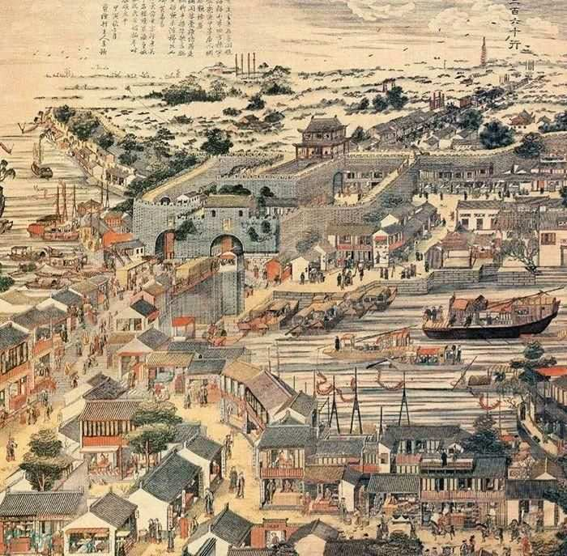
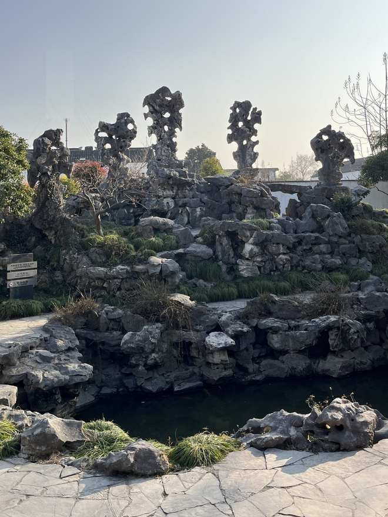

从阊门出发，沿"门—水—街—庙—园"走一遍：登一座"通天"的古城门，看一处"瓮中捉鳖"的真陷阱，数一数五条河怎么"开会"，再认识一位把王位让得干干净净的老祖宗。双脚丈量，看见苏州两千五百年的来处！
主题：城门 × 水运 × 商贸 × 吴文化寻根——一条线路串起"门—水—街—庙—园"，全程步行约 800 米，半日可游。
公元前 514 年，伍子胥"相土尝水、象天法地"筑起阖闾大城，阊门是八门之首。"阊"就是天门——它是苏州城门里唯一以"通天"命名的大门；伐楚大军从这里出发，所以它还有个威风的名字："破楚门"。《红楼梦》开篇那句"最是红尘中一二等富贵风流之地"，说的正是这里！
古书传说：孔子和颜渊登上泰山，一眼望见了千里之外、阊门外的白马。两地相距千里。

桃花坞木刻年画《阊门图》
"瓮中捉鳖"怎么捉？敌人攻破第一道城门，冲进瓮城——四面城墙居高临下，滚木礌石立刻招呼，瓮城就是古人给敌人准备的"大陷阱"。桃花坞年画里的阊门，又是什么雄姿？
站在聚龙桥边看五条水"开会"：东一条中市河，西两条上塘河、山塘河，再加上绕城而过的南濠、北濠——这就是"五龙汇阊"！明清时候，天下的货物顺着水路涌进阊门，这里就是当年江南最忙的"物流转运中心"。
从阊门进城就是西中市：453 米的民国老街，清末民初挤着 20 多家钱庄——钱庄就是"没有手机的银行"，这里就是当年苏州的"金融中心"。1935 年拓建后，两边翻建成带外廊的洋楼，一直留到今天。街口的皋桥还藏着一个课本成语的现场：东汉"举案齐眉"的梁鸿与孟光，就寄住在桥边的皋伯通家。
泰伯圣像（苏州泰伯庙 · 至德殿）
苏州凭什么给一位"没当过一天王"的古人立祠，还敢称"三吴首祠"？三千年前，周太王想把王位传给三子季历，好让贤孙姬昌（后来的周文王）接班。长子泰伯看破了父亲的心思，索性让位出走、断发文身来到江南，带领当地人筑城立国——这才有了勾吴国，才有了后来伍子胥筑的阖闾大城，才有了这扇阊门！孔子连声称赞："泰伯，其可谓至德也已矣！"

泰伯庙步行几分钟就是五峰园：2.5 亩的小园子，立着五座石峰——丈人峰、观音峰、三老峰、庆云峰、擎云峰，各高约两丈，"皱瘦漏透"，相传是北宋"花石纲"剩下的太湖石真古董。1998 年整修后园内建筑多为重建——所以有句话叫"园是新的，石是真的"。
一线六站"门—水—街—庙—园"，全程步行约 800 米、半日可游：阊门城楼 → 瓮城遗址公园 → 北码头聚龙桥 → 西中市 → 泰伯庙 → 五峰园。五峰园免费开放（8:00–16:00，省级文保）；泰伯庙开放时间以当日公告为准。建议穿舒适的步行鞋，带足饮用水；春秋两季光线较宜拍摄。
报名方式与人数安排以当期群内公告为准。
成团人数以当期公告为准，报满即截止。
面向对苏州文史与城市行走感兴趣的参加者，具体安排以当期公告为准。
六站各配一处现场看点，随走随看。
封子老师
姑苏区老年大学特聘文史讲师 · 苏州本土文旅内容创作者
教师风采，请点这里 →